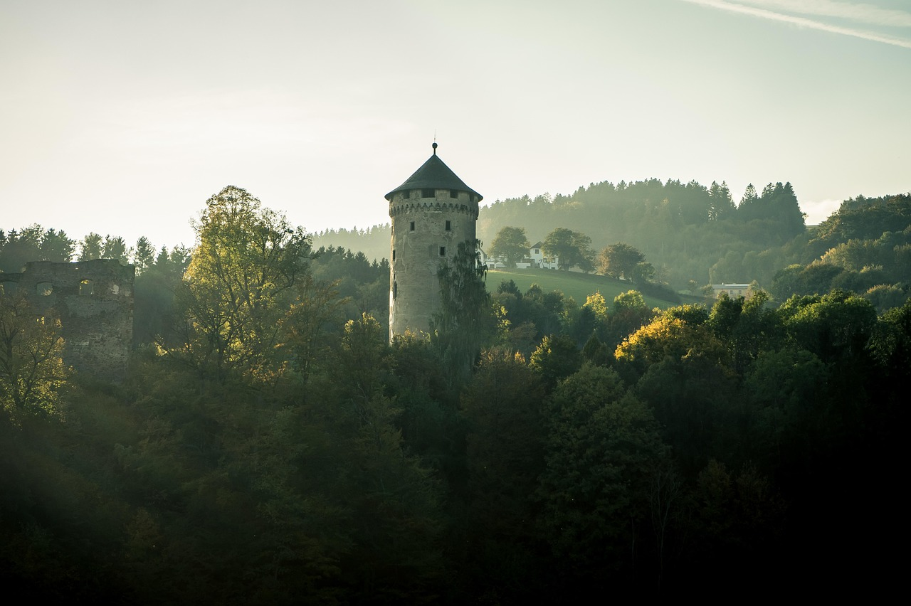

Après plusieurs jours de marche, tu parviens enfin jusqu'à la forteresse où les enfants sont retenus. Cependant, il y a beaucoup trop de gardes pour que tu t'en occupe seul. Tu dois donc trouver un moyen de franchir les portes sans alerter les gardes.